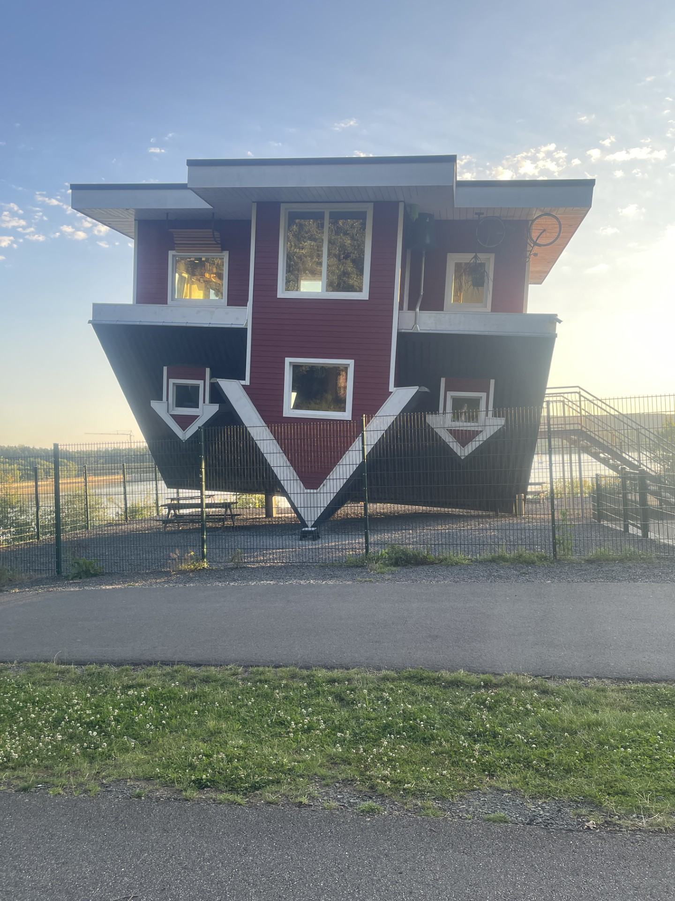
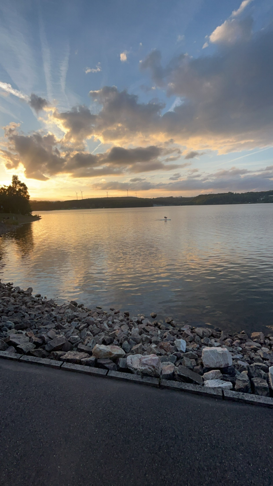
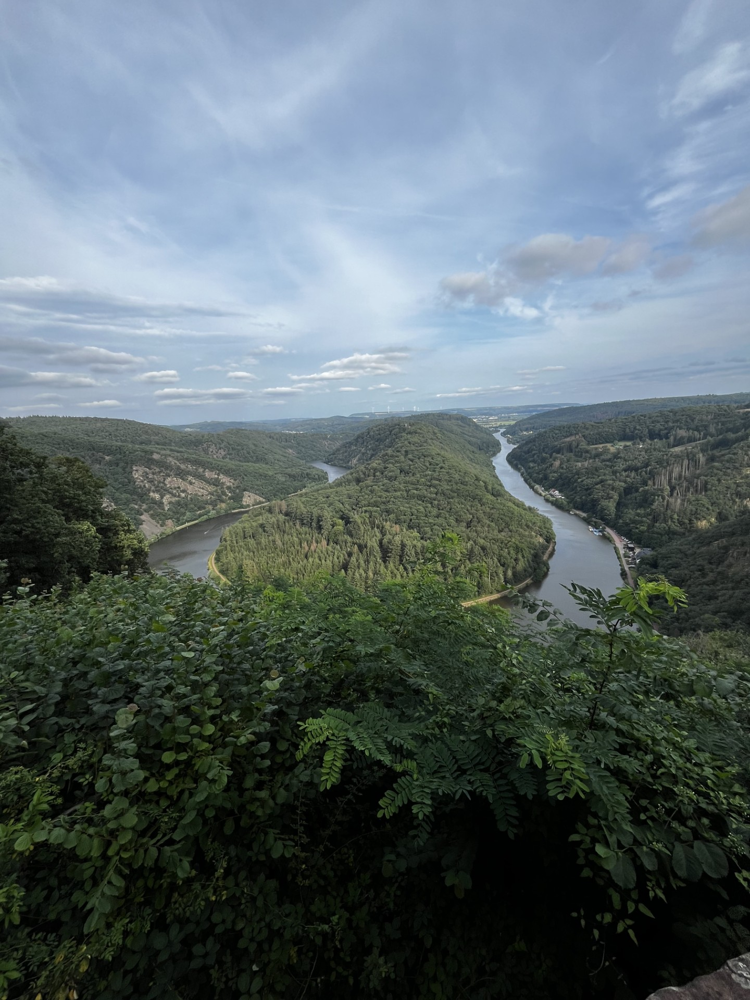
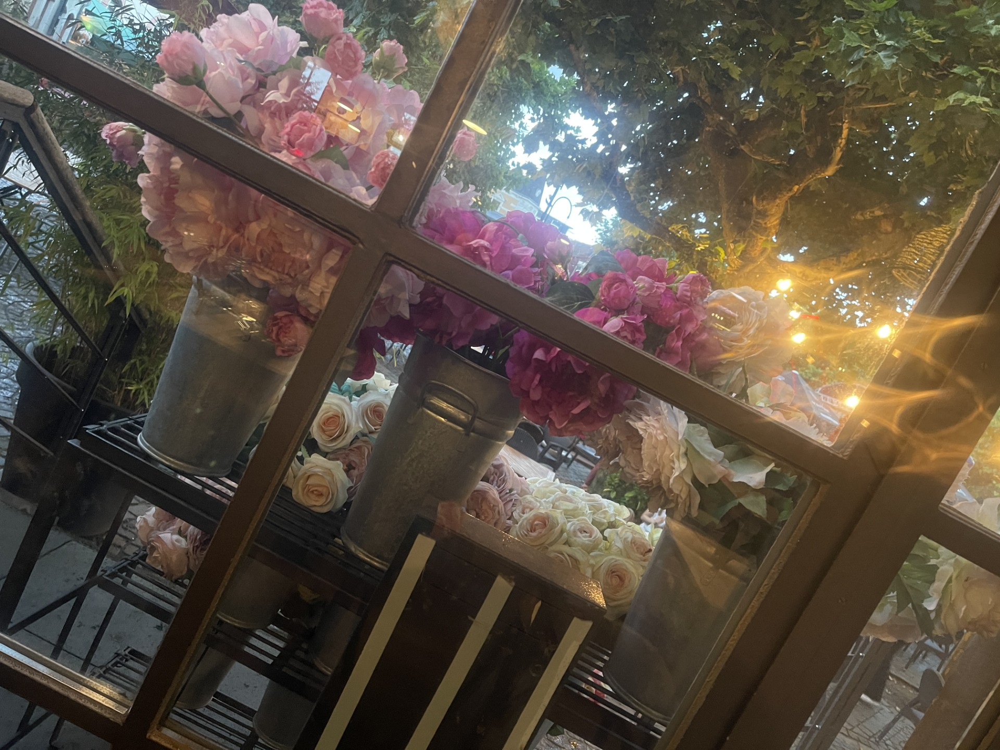
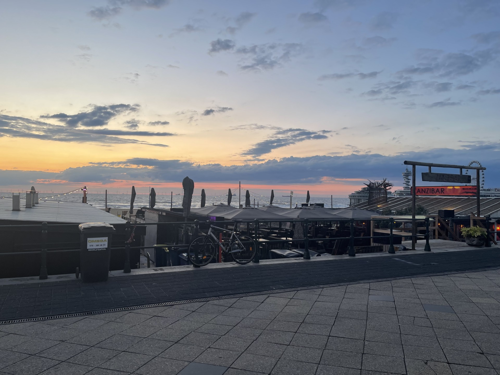
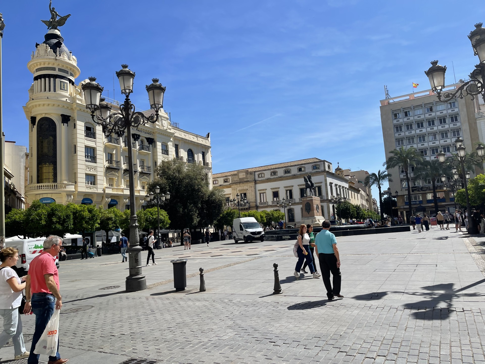
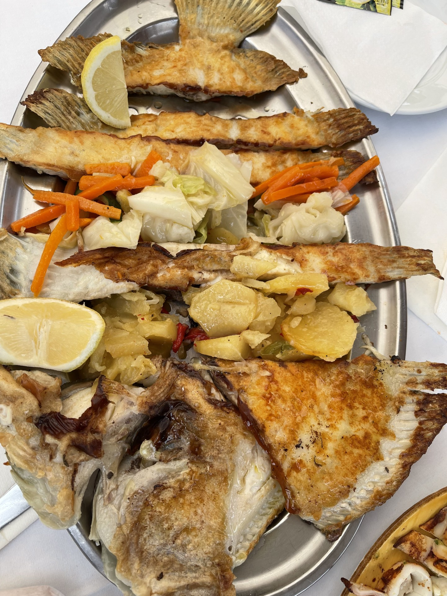

A small collection of my own travel photos. Each image has a short note
about when and where I captured it.

A colorful house in Germany, photographed during a quiet evening walk.

Sunset by the water in Germany, taken on a peaceful summer evening.

A wide landscape view in Germany, captured during a weekend trip.
A green walking path in the German countryside, taken on a morning walk.

An outdoor café in Germany, photographed while enjoying an evening coffee.
Coffee and dessert in Germany, captured to remember a relaxing break.

Sunset over a harbor in the Netherlands from a 2024 trip.

A busy city square in Spain, photographed during a spring holiday.

Seafood dinner in Spain, captured to remember a special meal.